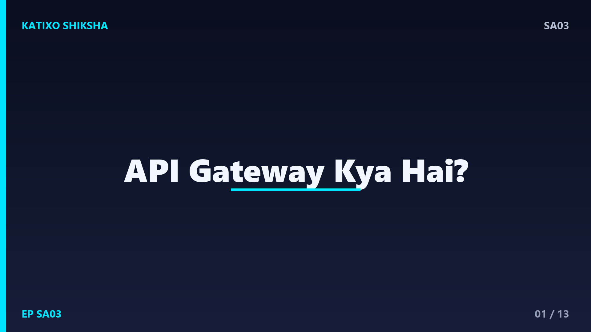
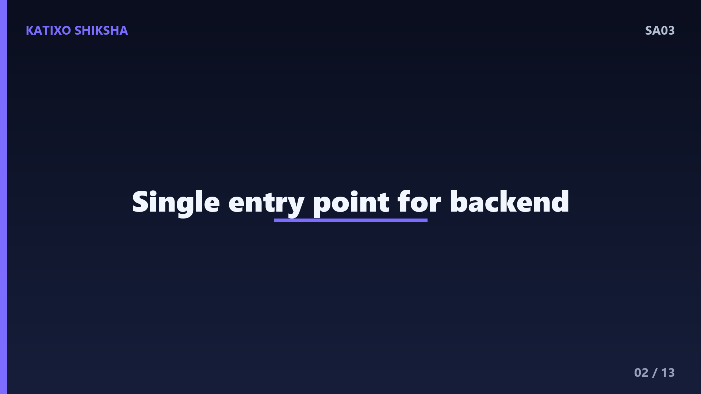
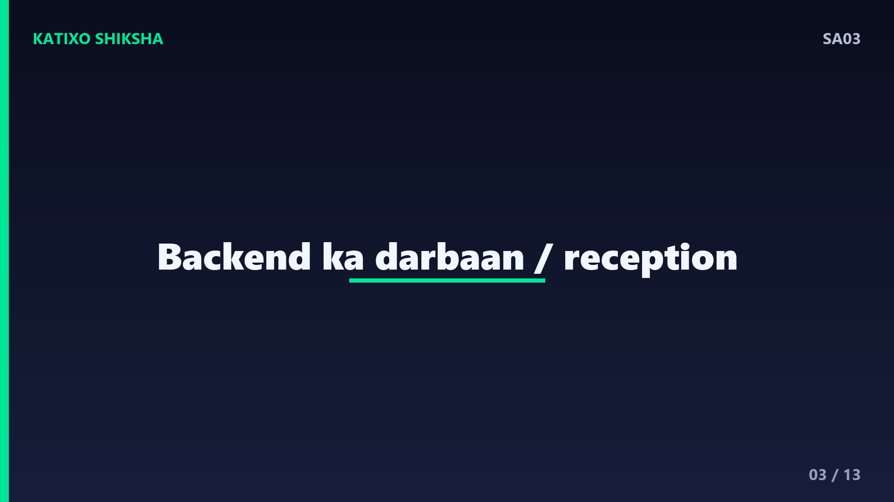
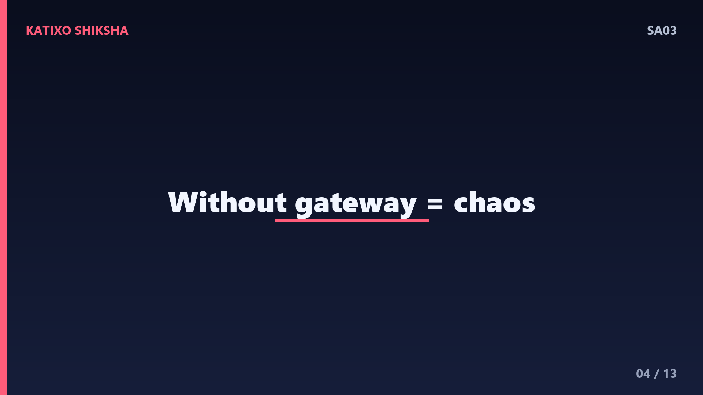
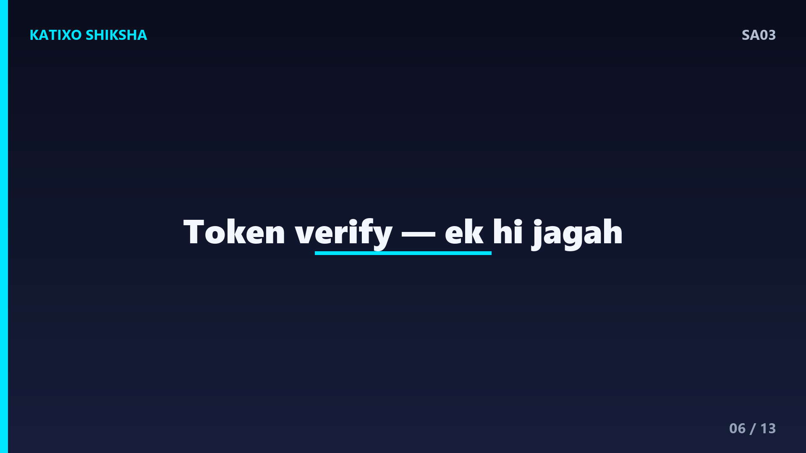
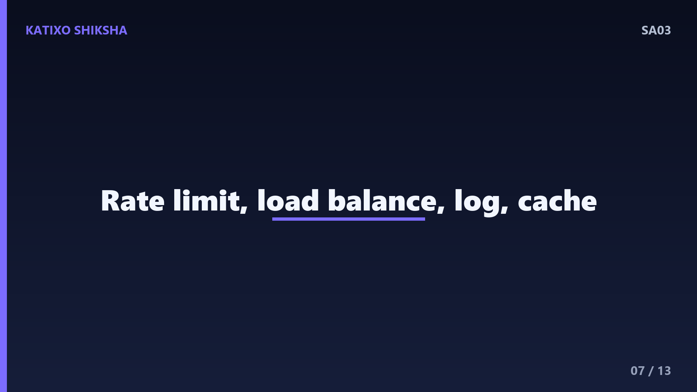
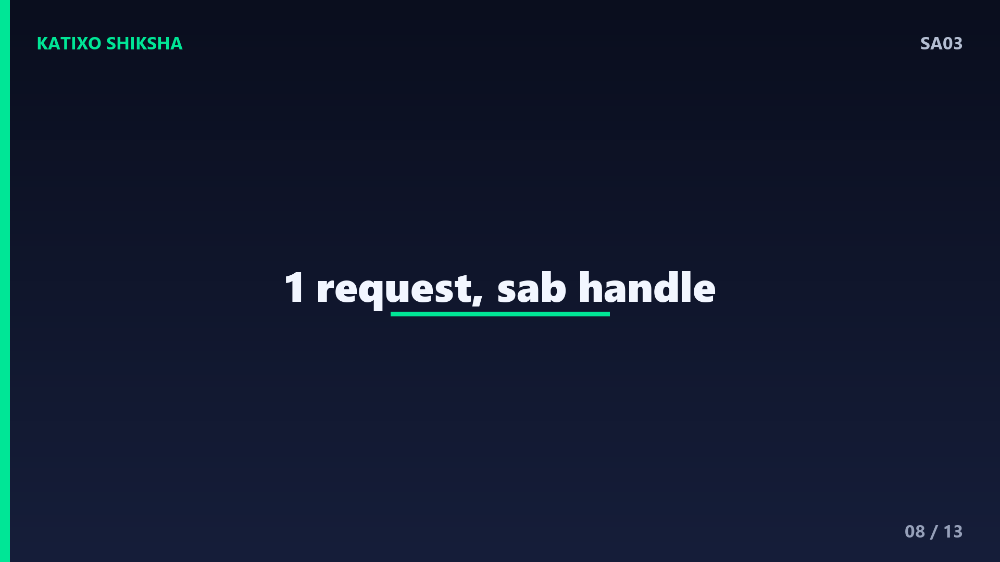
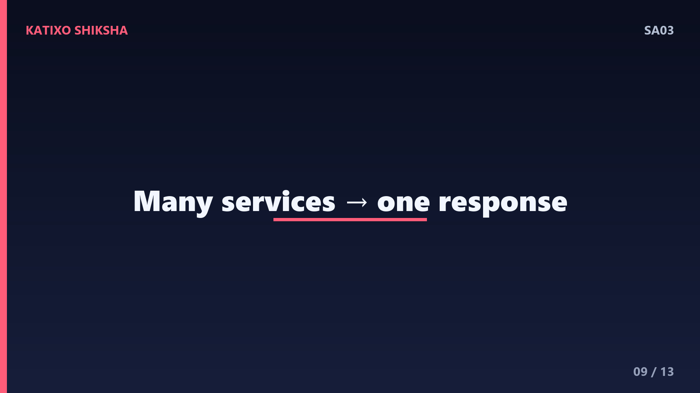
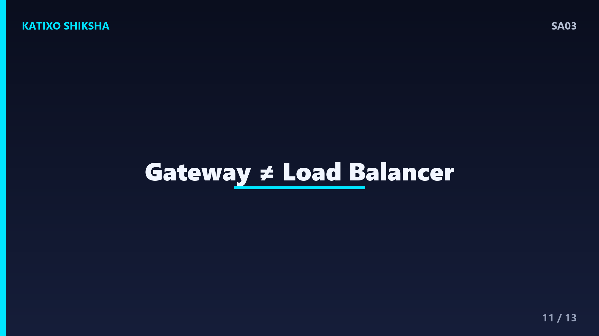

SA03 — API Gateway Kya Hai — Microservices Ka Darbaan?

Slide 1दोस्तों, मान लो आपके पास 20 अलग-अलग microservices हैं, और एक mobile app को हर एक से बात करनी है। क्या app को सारे 20 addresses याद रखने होंगे? हर एक का login अलग संभालना होगा? ये तो chaos हो जाएगा। यहीं आता है हमारा hero — API Gateway. System design interviews में ये एक must-know topic है। आज Katixo KhojLab की इस episode में हम साफ़ Hinglish में समझेंगे — API Gateway है क्या, कैसे काम करता है, और इसे कब use करना चाहिए। चलिए शुरू करते हैं।

Slide 2सबसे पहले — API Gateway है क्या? ये एक single entry point है आपके पूरे backend के लिए। मतलब, सारे clients — mobile app, website, या कोई और service — सीधे microservices से बात नहीं करते, बल्कि पहले Gateway से बात करते हैं। फिर Gateway उस request को सही internal service तक पहुँचाता है, जवाब लेकर वापस client को देता है। आसान भाषा में, ये आपके backend का darbaan या receptionist है — हर बाहर वाला पहले इसी से मिलता है।

Slide 3इसे एक analogy से समझते हैं। सोचिए एक बड़ी company का office building है, जिसमें कई departments हैं — HR, finance, sales. कोई visitor सीधे किसी भी floor पर नहीं घुस सकता. वो पहले reception पर आता है. Receptionist उसका ID check करता है, उसे सही department तक guide करता है, और visitor का record रखता है. API Gateway बिल्कुल यही reception है — security, routing और control, सब एक जगह. Clients को अंदर का map जानने की ज़रूरत ही नहीं रहती.

Slide 4अब Gateway के बिना दुनिया देखते हैं, ताकि problem साफ़ हो। बिना Gateway के, हर client को हर service का address पता होना चाहिए. हर service को अपना authentication, अपनी rate limiting, अपनी logging अलग से बनानी पड़ेगी — यानी same code बार-बार. और अगर कोई service का address बदल जाए, तो सारे clients को update करना पड़ेगा. ये approach tightly coupled, असुरक्षित और maintain करने में बहुत मुश्किल है. यही असली समस्या Gateway solve करता है.
Slide 5अब Gateway का सबसे basic काम — Routing. जब कोई request आती है, Gateway उसके URL path को देखकर तय करता है कि उसे किस service में भेजना है. जैसे, slash-orders से शुरू होने वाली request order service को जाएगी, और slash-users वाली user service को. Client को बस Gateway का एक ही address पता है, बाकी internal map Gateway अपने पास रखता है. इसी को request routing कहते हैं, और ये Gateway की core ज़िम्मेदारी है.

Slide 6अब Gateway का दूसरा बड़ा काम — Authentication और Authorization. हर service में अलग-अलग login check लगाने की बजाय, ये काम एक ही जगह Gateway पर हो जाता है. Client request के साथ एक token भेजता है, जैसे JWT. Gateway पहले verify करता है कि token सही है या नहीं, user कौन है, और क्या उसे ये काम करने की permission है. अगर token गलत हुआ, request यहीं रोक दी जाती है, अंदर की service तक पहुँचती ही नहीं. ये centralized security एक बहुत बड़ा फायदा है.

Slide 7Gateway के और भी ज़रूरी काम हैं, जिन्हें cross-cutting concerns कहते हैं. पहला — Rate Limiting, यानी एक client को तय समय में कितनी requests भेजने दी जाएँ, ताकि कोई system को overload या abuse ना कर सके. दूसरा — Load Balancing, requests को एक service के कई copies में बाँटना. तीसरा — centralized Logging और Monitoring. और कभी-कभी Caching, ताकि बार-बार आने वाले जवाब तेज़ी से मिल जाएँ. ये सब एक जगह होने से हर service हल्की और focused रहती है.

Slide 8अब एक concrete example से पूरा flow देखते हैं. एक user अपने food delivery app में restaurants देखना चाहता है. App एक request Gateway को भेजता है, साथ में login token. Gateway पहले token verify करता है, फिर rate limit check करता है, फिर decide करता है कि ये restaurant service की request है, और उसे वहाँ forward कर देता है. Restaurant service जवाब Gateway को लौटाती है, और Gateway उसे साफ़-सुथरा करके app को वापस भेज देता है. App को पता ही नहीं चला कि पीछे कितनी services हैं.

Slide 9एक advanced पर interview-friendly concept भी जान लीजिए — Request Aggregation. कभी एक screen को कई services का data चाहिए होता है. जैसे, एक user profile page को user info, उसके orders, और reward points — तीन अलग services से. Gateway एक ही client request पर पीछे तीनों services को call कर सकता है, सबके जवाब जोड़कर एक response में client को दे सकता है. इससे mobile app को बार-बार network calls नहीं करनी पड़तीं, जो speed और battery दोनों के लिए अच्छा है.
Slide 10अब एक ज़रूरी सावधानी, क्योंकि हर अच्छी चीज़ की एक कीमत होती है. API Gateway एक single point of failure बन सकता है — अगर Gateway down हुआ, तो सारे clients का access रुक जाएगा. इसलिए इसे हमेशा highly available बनाया जाता है, यानी कई copies में, load balancer के पीछे. दूसरी बात — हर request अब एक extra hop से गुज़रती है, जिससे थोड़ी latency बढ़ती है. इसलिए Gateway को हल्का और तेज़ रखना ज़रूरी है, उसमें भारी business logic मत डालिए.

Slide 11अब interview points और एक common confusion साफ़ करते हैं. लोग API Gateway और Load Balancer को मिला देते हैं. Load Balancer सिर्फ़ traffic को servers में बाँटता है, वो network-level काम है. API Gateway इससे ऊपर का है — ये routing, auth, rate limiting जैसे application-level काम करता है. एक और term — Backend for Frontend, यानी BFF, जहाँ हर तरह के client के लिए, जैसे mobile और web, अलग Gateway बनाया जाता है ताकि हर एक को उसके हिसाब से सही data मिले.
Slide 12तो चलिए एक quick recap कर लेते हैं, तीन points में. पहला — API Gateway आपके backend का single entry point है, जो सारे clients और microservices के बीच एक darbaan की तरह खड़ा रहता है. दूसरा — ये routing, authentication, rate limiting, load balancing और logging जैसे cross-cutting काम एक ही जगह संभालता है, जिससे हर service simple रहती है. तीसरा — ये microservices में बहुत powerful है, पर इसे highly available रखना ज़रूरी है ताकि ये single point of failure ना बने.
Slide 13तो दोस्तों, आज आपने सीखा कि API Gateway कोई जटिल जादू नहीं, बल्कि एक बेहद logical और ज़रूरी हिस्सा है हर बड़े microservices system का. ये clients को simplicity देता है और backend को security व control. अगली बार जब आप कोई बड़ा system design करें या interview में microservices की बात करें, तो API Gateway को ज़रूर जगह दीजिए — interviewer ज़रूर impress होगा. Aisi aur system design videos ke liye Katixo KhojLab subscribe karein! मिलते हैं अगली episode में।